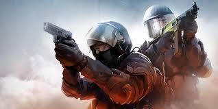
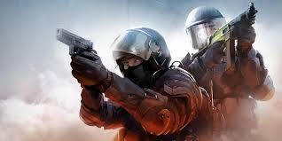

CLAUDIO BESSONE - CS GO
 

Buenas a todos, me llamo Claudio Bessone, suelo jugar CS GO desde hace mucho tiempo. Me parecio armar una pagina sobre información mia y del juego de PC que más me gusta y que actualmente estoy jugando. De mi parte me parece un muy buen juego, de muy bueno graficos y recomendable. A continuación brindo una descripcion del juego a modo de Información:
Global Offensive (CS:GO) es un videojuego de disparos en primera persona desarrollado por Valve Corporation en cooperación con Hidden Path Entertainment, y es el cuarto juego de la saga Counter-Strike, sin contar Counter-Strike: Online. Fue lanzado al mercado el 21 de agosto de 2012 para las plataformas de Microsoft Windows, Mac OS X y Xbox 360, mientras que sufrió un retraso en PlayStation 3.
Global Offensive dispuso de una beta accesible únicamente mediante invitación en Steam, en su momento la revista PC Gamer anunció que el videojuego sería lanzado oficialmente el 21 de agosto de 2012 a un precio de € 10,9912, aunque ahora es gratuito. Gracias a esto, su base de jugadores aumentó de 20 a 45 millones, haciendo que retomara su lugar dentro de los juegos más jugados de los últimos años.
Armas del CS GO
| Tipo de Arma | Armas |
|---|---|
| Pistolas |
|
| Armas Pesadas |
|
| Subfusiles |
|
| Fusiles de asalto y de francotirador |
|